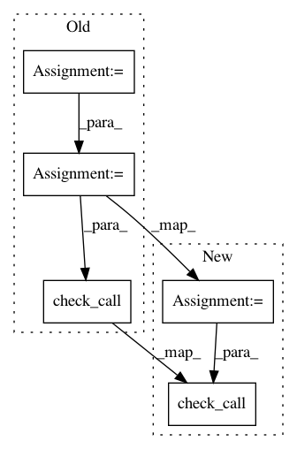

6c0d1328eec1c5fd82fb1160b94828ef4600f668,tests/test_notebooks.py,,_exec_notebook,#Any#,9
Before Change
def _exec_notebook(path):
with tempfile.NamedTemporaryFile(suffix=".ipynb") as fout:
args = ["jupyter", "nbconvert", "--to", "notebook", "--execute",
"--ExecutePreprocessor.timeout=1000",
"--output", fout.name, path]
subprocess.check_call(args)
class TestNotebooks(geomstats.tests.TestCase):
@staticmethod
After Change
def _exec_notebook(path):
file_name = tempfile.NamedTemporaryFile(suffix=".ipynb").name
args = ["jupyter", "nbconvert", "--to", "notebook", "--execute",
"--ExecutePreprocessor.timeout=1000",
"--output", file_name, path]
subprocess.check_call(args)
class TestNotebooks(geomstats.tests.TestCase):
@staticmethod
In pattern: SUPERPATTERN
Frequency: 4
Non-data size: 5
Instances
Project Name: geomstats/geomstats
Commit Name: 6c0d1328eec1c5fd82fb1160b94828ef4600f668
Time: 2020-05-22
Author: 62605255+pchauchat@users.noreply.github.com
File Name: tests/test_notebooks.py
Class Name:
Method Name: _exec_notebook
Project Name: broadinstitute/gtex-pipeline
Commit Name: 51894da4d9c4c4186c1b4ce34b2cf53737f0dab5
Time: 2016-09-22
Author: francois@broadinstitute.org
File Name: rnaseq/src/run_SamToFastq.py
Class Name:
Method Name:
Project Name: googledatalab/pydatalab
Commit Name: 7062e5d8601dfc651f670c5427194a3f68a5dd2c
Time: 2017-05-17
Author: qimingj@users.noreply.github.com
File Name: solutionbox/code_free_ml/test_mltoolbox/test_transform_raw_data.py
Class Name: TestTransformRawData
Method Name: test_local_csv_transform
Project Name: broadinstitute/gtex-pipeline
Commit Name: 6abef63d2e0f54ff98e402bb390d01cfb33625c1
Time: 2017-01-11
Author: francois@broadinstitute.org
File Name: rnaseq/src/run_RSEM.py
Class Name:
Method Name: